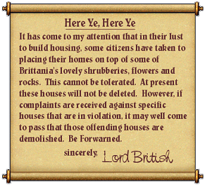
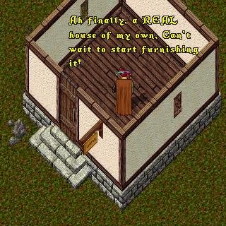
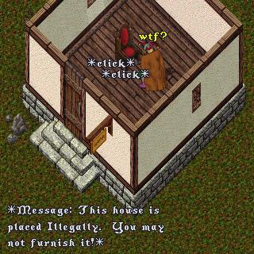
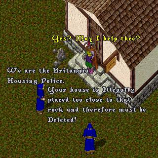
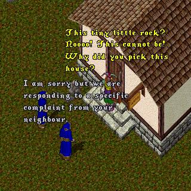
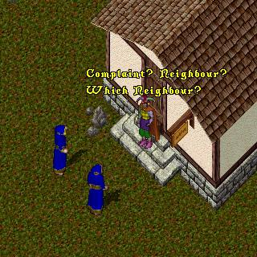
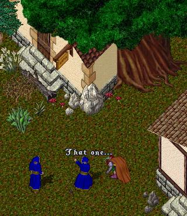

This episode opens with a fresh bulletin to the
citizens of Britannia from their fearless
leader, Lord British.
 |
Meanwhile, in another part of Britannia,
ImaNewbie has just purchased a new house and
can't wait to start decorating. But wait, what
is that I see? Could it be a rock less than four
clear squares from the front of the house?
This doth not bode well!
 |
 |
Ack! Not allowed to furnish the house? Well, I
guess it could be worse ... or could it? Just
then there is a knock at the door!
 |
 |
 |
 |